CS184/284A Spring 2025 Homework 3 Write-Up
Link to webpage: cal-cs184-student/hw-webpages-xay-writeup
Link to GitHub repository: cal-cs184-student/sp25-hw3-xhw3

Overview
In this project, I implemented a pathtracer to create images with realistic lighting and shadows. I started by writing algorithms to generate rays that intersect with the scene. Through my implementation of sampling intersections with triangles and spheres, I was able to gather information about the objects in the scene. To speed up the intersection sampling process, I implemented bounding volume hierarchies (BVH) to organize the scene geometry into a hierarchical tree. I built the BVH tree, implemented intersection tests between rays and bounding boxes, and created a system to traverse the tree and test intersections of each BVH's leaf node with the incoming ray. For handling lighting in the scene, I first developed an algorithm to render direct illumination by combining zero-bounce illumination (light directly from the source) and one-bounce illumination (light reflected off objects, creating dark shadows). I then enhanced this by adding indirect illumination from light recursively bouncing off objects, using random sampling and Monte Carlo integration to estimate radiance. This made my rendered images look more realistic, as the indirect illumination captured how colors from nearby surfaces influence the shadows cast by objects. Since higher bounces contribute less light exponentially, I optimized my implementation by adding random termination (Russian roulette) to reduce recursion depth while maintaining realistic rendering. While my Monte Carlo path tracing implementation produced good results, I wanted to further reduce noise in the rendering. I accomplished this by implementing adaptive sampling, which concentrates sampling efforts in areas where pixels converge quickly. By combining all these techniques, I created a pathtracer capable of rendering images with various parameters, including adjustable numbers of light bounces and light rays.Part 1: Ray Generation and Scene Intersection
Ray Generation pipelinefor each pixel (x,y):
for each sample:
// 1. Generate normalized coordinates
x_norm = (x + random_offset) / width
y_norm = (y + random_offset) / height
// 2. Generate camera ray
ray = camera->generate_ray(x_norm, y_norm)
// 3. Trace ray through scene
radiance = est_radiance_global_illumination(ray)
For the triangle intersection, I used Möller-Trumbore algorithm
which computes both the intersection point and barycentric coordinates in a single calculation. The algorithm starts by calculating two edge vectors of the triangle (edge1 and edge2) from vertex v1. Then calculates a vector h as the cross product of the ray direction and edge2,
followed by calculating the determinant using the dot product of edge1 and h. If the determinant is close to zero, the ray is considered parallel to the triangle, and we return false. Otherwise, we proceed by calculating the vector s from vertex v1 to the ray origin and use
it to find the barycentric coordinates (beta and gamma) through a series of dot products and cross products. The third barycentric coordinate (alpha) is calculated as one minus the sum of beta and gamma. If any barycentric coordinate is negative or if their sum exceeds 1, the intersection point lies
outside the triangle, and we return false. At the end, we calculate the intersection distance t and verify it falls within the ray's valid range (min_t to max_t).
Here are some of the results from the Ray intersections:
|
|

|

|

|
Part 2: Bounding Volume Hierarchy
BVH construction algorithmFor this method, I uses the Mean of Centroids heuristic along the axis with the largest extent. Below is the algorithm construction:
- Create an empty bounding box and calculate the number of primitives
- Check if there are no primitives (size = 0)
- Iterate through all primitives to:
- Expand the overall bounding box to include it
- Add the primitive's centroid to a running sum
- Create a new BVH node with the computed bounding box
- Check if the number of primitives is small enough (≤ max_leaf_size)
- If true, create a leaf node by setting start and end iterators
- Return the leaf node (base case)
- Determine the axis with the largest extent:
- Start with X-axis (axis = 0)
- If Y-extent > X-extent, switch to Y-axis (axis = 1)
- If Z-extent > current axis extent, switch to Z-axis (axis = 2)
- Calculate the mean of all centroids by dividing the sum by the number of primitives
- Use the coordinate of this mean along the chosen axis as the split point
- Partition the primitives into two groups using std::partition:
- Left group: centroids < split point
- Right group: centroids ≥ split point
- Check if all primitives ended up on one side (middle = start or middle = end)
- If true, fall back to a median split:
- Set middle to start + (size/2)
- Use std::nth_element to find the median primitive
- Recursively construct both subtrees and return the completed node:
- Build left subtree with primitives [start, middle)
- Build right subtree with primitives [middle, end)
Here are some of the results from the BVH construction:

|

|

|

|

|
|
For cow.dae (5,856 primitives) BVH contruction take 0.0008 sec while maxplanck.dae (50,801 primitives) take 0.0082 sec. This demonstrates the BVH's O(log n) traversal efficiency and for more complex geometry, the Stanford Dragon (105,120 primitives), rendering with BVH approximately 4.4 million rays per second take around 7.1 intersection tests per ray on average . If we compare that without BVH, each ray would need to test against every primitive requiring it's own primitive intersection test per ray. So, the spatial median split strategy proves effective, creating well-balanced trees that enable fast ray traversal while keeping the BVH construction time minimal. See the comparision below:

|

|

|
|
Part 3: Direct Illumination
Part 3.1The function
Vector3D DiffuseBSDF::f Calculates how much light is reflected from direction wi (incoming) to direction wo (outgoing), where it returns reflectance / PI. For DiffuseBSDF::sample_f, it generates a random incoming direction wi and returns the BSDF value for that direction.
then return by calling f(wo, *wi)
Part 3.2
Given Ray &r and Intersection &isect ,
PathTracer::zero_bounce_radiance returns the light that reaches the camera without bouncing off any of the objects in the scene. This is only the light that is coming from the light source, I used the BSDF of the surface at the point of intersection and returned its emission.
Then, updated est_radiance_global_illumination to return the zero-bounce radiance instead of normal shading.
Part 3.3: Direct Lighting with Uniform Hemisphere Sampling
In this approach, I randomly sample directions in the hemisphere above the hit point and check if those directions hit a light source.
The Algorithm Follows:
- Sample a random direction in the hemisphere above the hit point
- Cast a ray in that direction to see if it hits anything
- If it hits a light source, calculate the contribution from that light
- Average multiple samples to get the final estimate
Implementation below:
Vector3D PathTracer::estimate_direct_lighting_hemisphere(const Ray &r, const Intersection &isect) {
Matrix3x3 o2w;
make_coord_space(o2w, isect.n);
Matrix3x3 w2o = o2w.T();
const Vector3D hit_p = r.o + r.d * isect.t;
const Vector3D w_out = w2o * (-r.d);
Vector3D L_out(0, 0, 0);
for (int i = 0; i < ns_area_light; i++) {
double pdf;
Vector3D w_in = hemisphereSampler->get_sample(&pdf);
Vector3D w_in_world = o2w * w_in;
Ray sample_ray(hit_p, w_in_world);
sample_ray.min_t = EPS_F;
Intersection light_isect;
if (bvh->intersect(sample_ray, &light_isect)) {
if (light_isect.bsdf->get_emission().norm2() > 0) {
Vector3D L_i = light_isect.bsdf->get_emission();
Vector3D f = isect.bsdf->f(w_out, w_in);
double cos_theta = w_in.z;
L_out += f * L_i * cos_theta / pdf;
}
}
}
L_out /= ns_area_light;
return L_out;
}
Part 3.4: Direct Lighting with Important Sampling Lights
In this approach, I directly sample the light sources instead of random directions, this follow the same implementation as the previous part where it is much more efficient.
The Algorithm Follows:
- For each light source in the scene:
- Sample a point on the light
- Calculate the direction from the hit point to that light point
- Check if the path has no objects blocking the light
- If unoccluded, calculate the contribution
Implementation below:
Vector3D PathTracer::estimate_direct_lighting_importance(const Ray &r, const Intersection &isect) {
Matrix3x3 o2w;
make_coord_space(o2w, isect.n);
Matrix3x3 w2o = o2w.T();
const Vector3D hit_p = r.o + r.d * isect.t;
const Vector3D w_out = w2o * (-r.d);
Vector3D L_out(0, 0, 0);
for (auto light : scene->lights) {
int num_samples = light->is_delta_light() ? 1 : ns_area_light;
Vector3D light_contribution(0, 0, 0);
for (int i = 0; i < num_samples; i++) {
Vector3D wi_world;
double dist_to_light;
double pdf;
Vector3D light_intensity = light->sample_L(hit_p, &wi_world, &dist_to_light, &pdf);
if (pdf < 1e-4 || light_intensity.norm2() < 1e-6) {
continue;
}
Vector3D wi = w2o * wi_world;
if (wi.z <= 0) {
continue;
}
Ray shadow_ray(hit_p, wi_world);
shadow_ray.min_t = EPS_F;
shadow_ray.max_t = dist_to_light - EPS_F;
Intersection shadow_isect;
if (!bvh->intersect(shadow_ray, &shadow_isect)) {
Vector3D f = isect.bsdf->f(w_out, wi);
double cos_theta = wi.z;
if (light->is_delta_light()) {
light_contribution += f * light_intensity * cos_theta;
} else {
light_contribution += f * light_intensity * cos_theta / pdf;
}
}
}
if (num_samples > 0) {
L_out += light_contribution / num_samples;
}
}
return L_out;
}
Compare the results between uniform hemisphere sampling and lighting sampling
The importance sampling method produces significantly cleaner images with less noise compared to uniform hemisphere sampling. This occurs because importance sampling focuses on sampling the actual light sources, while hemisphere sampling wastes computational effort by randomly sampling all directions, including those without light sources.

|

|

|

|
Compare the noise levels in soft shadows when rendering with 1, 4, 16, and 64 light rays
Using one sample per pixel while adjusting the number of light rays (controlled by the
-l flag) shows us the impact on noise reduction. So, when we increase the light ray count, it improves the accuracy of shadow and light interaction estimation. This results in more refined shadow gradients and overall smoother image quality, particularly noticeable in the transition from 1 to 64 samples.
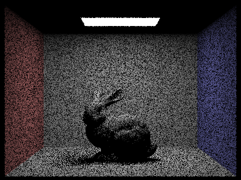
1 sample |
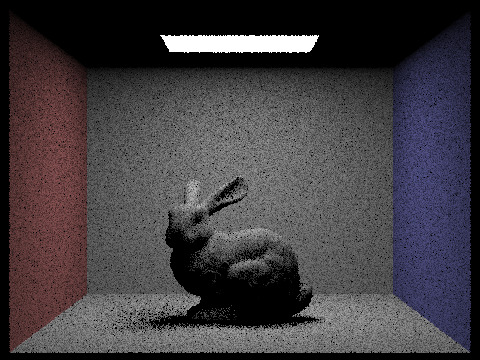
4 samples |
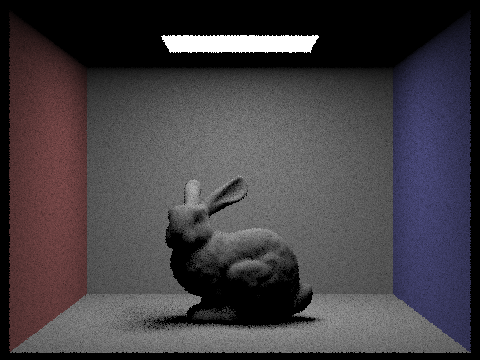
16 samples |
64 samples |
Part 4: Global Illumination
I spent alot of time on this part because I was having a hard time getting the correct results + I just found out about instructional machines to render my image.Part 4.2: Global Illumination with up to N Bounces of Light
First off, I calculate the total illumination by combining direct and indirect lighting using
PathTracer::est_radiance_global_illumination. To handle multiple light bounces, I implemented PathTracer::at_least_one_bounce_radiance which recursively traces rays through the scene. Then, set the ray depth to max_ray_depth in PathTracer::raytrace_pixel to control the number of recursive bounces.
The recursive ray tracing process begins at each intersection point, where rays are traced through the scene for up to max_ray_depth bounces, accumulating both direct and indirect illumination at each step. Here's the implementation breakdown:
- Check accumulation flag:
if (!isAccumBounces) { return one_bounce_radiance(r, isect); } - Initialize with direct illumination:
L_out = one_bounce_radiance(r, isect); - Sample from BSDF:
Vector3D w_in; double pdf; Vector3D f = isect.bsdf->sample_f(w_out, &w_in, &pdf); - Convert to world space:
Vector3D w_in_world = o2w * w_in; - Generate sample ray:
Ray sample_ray(hit_p, w_in_world); sample_ray.min_t = EPS_F; sample_ray.depth = r.depth + 1; - Check for intersection:
Intersection sample_isect; if (!bvh->intersect(sample_ray, &sample_isect)) { // No intersection case } - Process intersection:
Vector3D L = at_least_one_bounce_radiance(sample_ray, sample_isect); - Calculate cosine term:
double cos_theta = w_in.z; // In local coordinates, normal is (0,0,1) - Accumulate final contribution:
L_out += f * L * cos_theta / pdf;
Using 1024 samples per pixel with global illumination:
|
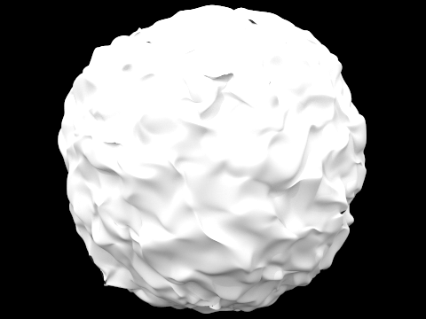
|
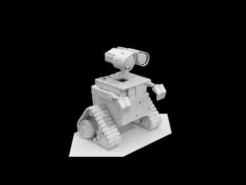
|
|
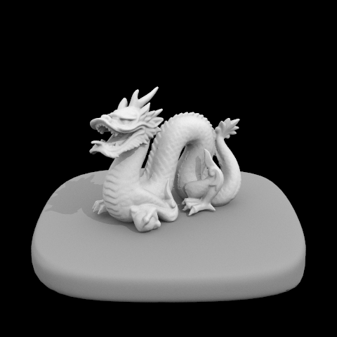
|
|
The images below show the distinct characteristics of direct versus indirect illumination. In direct lighting, you can see that the sharp shadows and bright light sources. However, in indirect, the light sources appear dark while the shadows showing color from the pink, purple, and white surfaces surrounding the sphere.

|

|
Part 4.3: Global Illumination with Russian Roulette
For this part, the implementation pretty much the same as the previous part. In addition, by adding Russian roulette
(random termination) this optimize the rendering of global illumination by making it so that it can recurse less than max_ray_depth times.
I chose a termination probability of 0.3 (between the recommended 0.3 and 0.7) for Russian Roulette. When comparing the results with and without Russian Roulette, I noticed very minimal differences. The only distinction I could observe was when zooming in significantly where the Russian Roulette version appeared slightly more grainy.
Non-Accumulated Versions
In the No Accumulation column, I observed how each bounce contributes to the final image. The 2nd bounce reveals light that bounced off the walls/floor onto the bunny or vice versa. I noticed the bottom of the bunny becomes slightly illuminated due to light reflecting off the floor where an effect impossible to see with just the first bounce. The 3rd bounce adds subtle environmental lighting, creating a dim but recognizable view of the scene.
Accumulated Versions
Looking at the accumulated renders, I started with max-depth of 0 showing only the light source
(zero-bounce). With one bounce, I captured only directly lit areas, resulting in dark shadows. Adding more bounces, I saw the shadows and indirect areas become gradually more illuminated, creating a more realistic appearance. I also noticed the bunny reflecting the colored walls, showing how light picks up wall colors before hitting the bunny. After 3 bounces, improvements became subtle, mainly affecting overall brightness and fine surface details.
Russian Roulette
Between using Russian Roulette termination and not, I observe little to no difference. I chose a termination probability of 0.30, since it was between the recommended 0.3 and 0.7, and observed that it produced results very similar to if I didn’t use Russian Roulette. The difference is only really apparent if I zoom in a lot, where I see that the Russian Roulette version looks a slight bit more grainy.
| Max Ray Depth | Accumulation | No Accumulation | Accumulation + Russian Roulette |
|---|---|---|---|
| 0 |  |
|
|
| 1 | 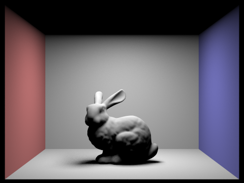 | 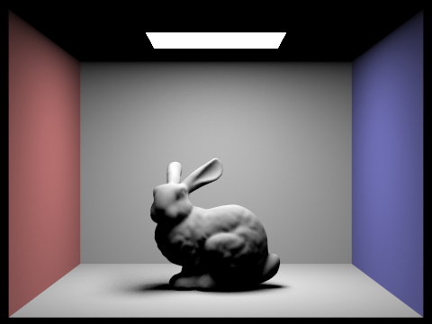 | |
| 2 | 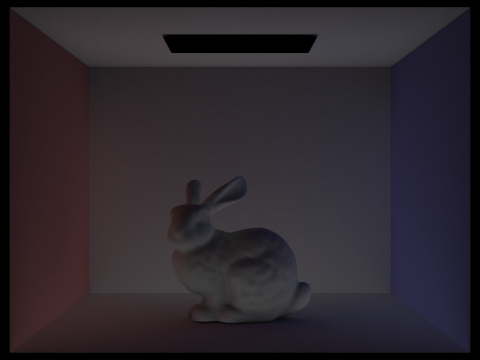 | 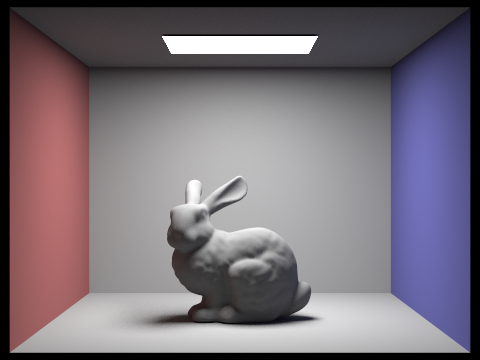 |  |
| 3 | 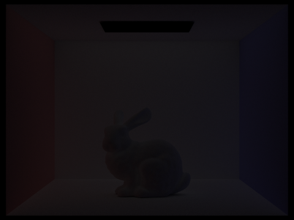 | 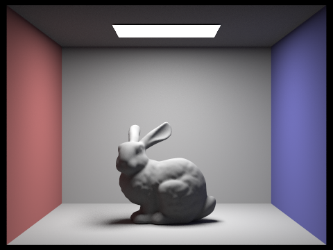 | |
| 4 | 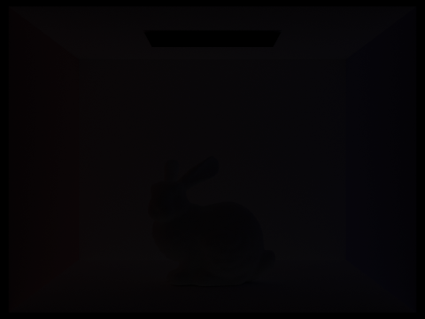 | ||
| 5 | 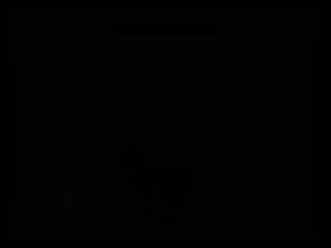 | ||
| 100 |  |
| sample-per-pixel rates (S) | CBspheres_lambertian.dae |
|---|---|
| 2 |  |
| 4 |  |
| 8 | |
| 16 | |
| 64 | 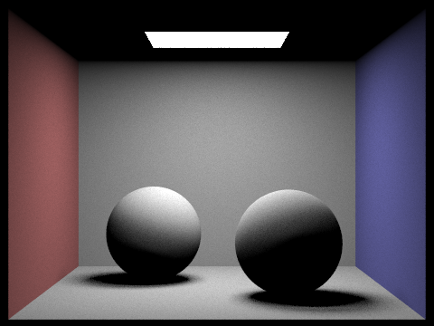 |
| 1024 | |
Part 5: Adaptive Sampling
For this part, adaptive sampling is a technique that optimizes the rendering process by varying the number of samples per pixel based on how quickly each pixel converges. For each pixel, we track the mean (μ) and variance (σ²) of the samples we've taken.
Confidence Interval: We use the formula I = 1.96 × σ/√n to determine if a pixel has converged, where a pixel is considered converged when I ≤ maxTolerance × μ
Implementation Details:
- Sample Processing:
// Generate ray and compute radiance Ray ray = camera->generate_ray(x_norm, y_norm); Vector3D radiance = est_radiance_global_illumination(ray); // Update statistics total_radiance += radiance; s1 += radiance; s2 += radiance * radiance; samplesCompleted++; - Convergence Check:
if ((i + 1) % samplesPerBatch == 0 && i + 1 < num_samples) { // Compute mean Vector3D mean = s1 / samplesCompleted; if (samplesCompleted > 1) { // Compute variance: (s2 - s1²/n) / (n-1) Vector3D variance = (s2 - (s1 * s1) / samplesCompleted) / (samplesCompleted - 1); // Compute confidence interval double sigma = sqrt(variance.illum()); double I = 1.96 * sigma / sqrt(samplesCompleted); // Check convergence if (I <= maxTolerance * mean.illum()) { break; // Stop sampling this pixel } } } - Final Update:
// Update pixel with average radiance Vector3D avg_radiance = total_radiance / samplesCompleted; sampleBuffer.update_pixel(avg_radiance, x, y); sampleCountBuffer[x + y * sampleBuffer.w] = samplesCompleted;
Results Comparison:
Below are comparisons between regular rendering (left) and the sample rate visualization (right). The brighter areas in the rate visualization indicate regions where more samples were needed for convergence.
|
|
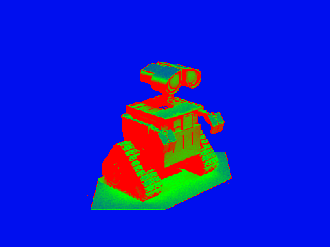
|
|
|
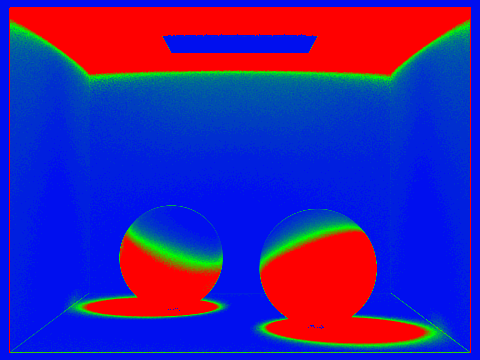
|